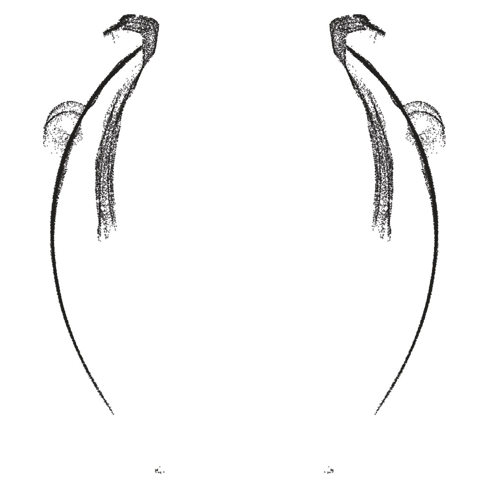
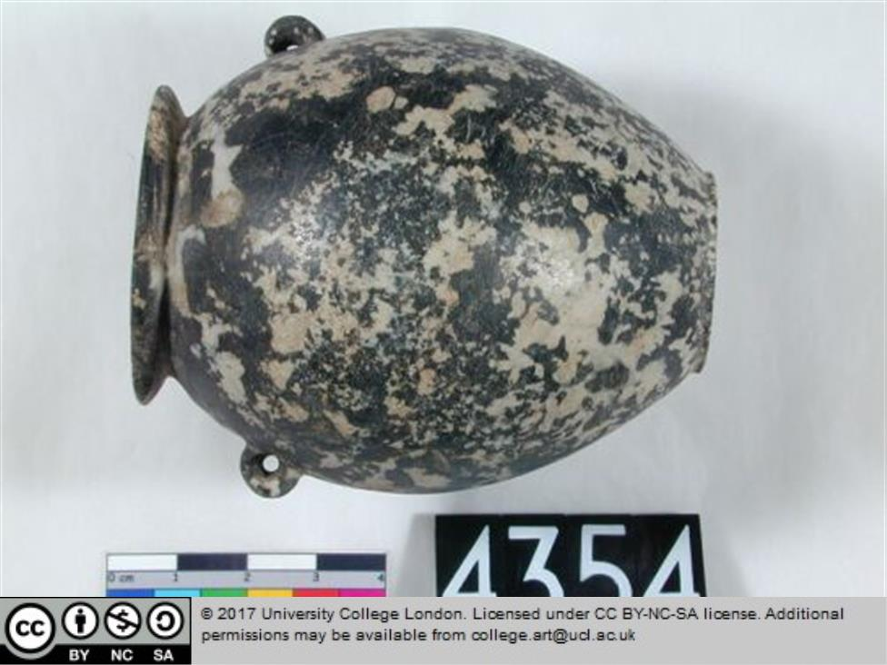

Download full precision report


Petrie Museum, CC BY-NC-SA
| Classification | Globular Ovoid Jar |
| Description | Stone vase, identified in museum register as black and white syenite, perhaps hornblende diorite (? |
| Source | Max Fomitchev-Zamilov, 3D Scans of the Naqada Period Stone Vessels from the Petrie Museum of Egyptian and Sudanese Archeology, 2025. |
| Museum ID | LDUCE-UC4354 |
| Dealer ID | N/A |
| Catalogue ID | MV015c |
| Material | Black & White Syenite, perhaps Hornblende Diorite |
| Height | 72mm |
| Width | 63mm |
| Scan Method | CMM |
| Mesh Density | 0.145mm |
| Precision Score Full | 31 |
| Precision Score Exterior | 52 |
| Precision Score Interior | 12 |